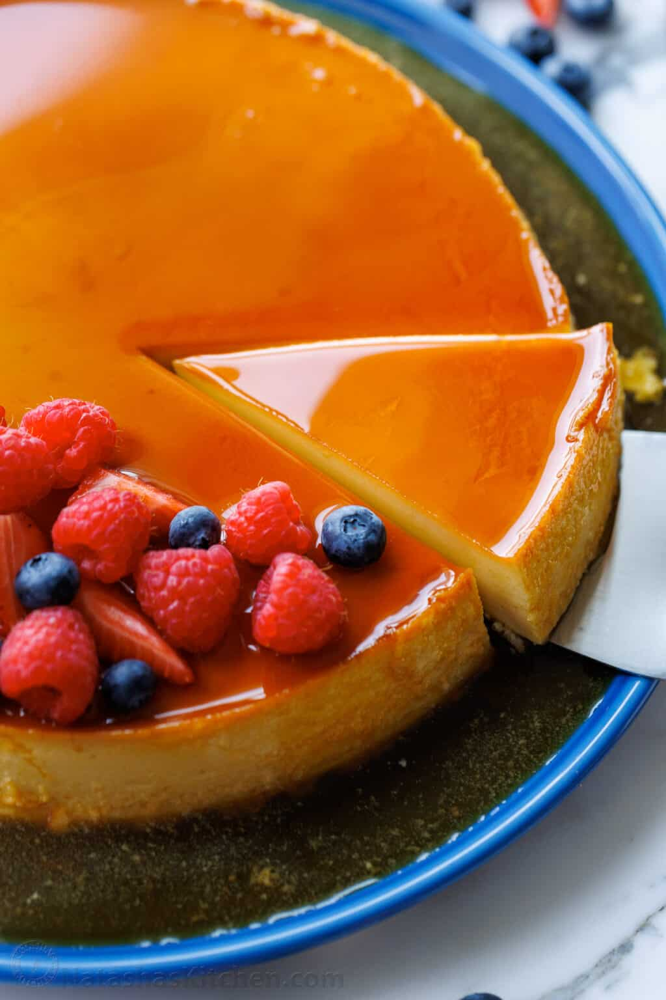

Mexican Flan
Home

Perfect Mexican Flan
This tradional Mexican desert is iconic for its creaminess and rich flavor.
Mostly served by itself it is hard to resit when made at home.
Ingredients
- 3/4 cup granulated sugar
- 1/4 cup water
- 14 oz can of condensed milk
- 12 oz can evaporated milk
- 1 3/4 cups heavy whipping cream
- 1 1/2 Tbsp vanilla extract
- 5 large eggs
- 1/4 tsp fine sea salt
Steps
- Prep – Preheat the oven to 350˚F with a rack in the middle of the oven and bring a kettle of water to boil which you will need for the water bath. Take out a 9-inch by 2-inch round, non-stick cake pan so it’s ready to transfer melted sugar.
- Make the Caramel – In a medium heavy saucepan, stir together sugar and water until dissolved. Bring to a boil over medium-high heat without stirring, about 3-5 minutes. Once you see it start to turn golden then start swirling the pan frequently over the heat until it’s the color of cinnamon, about 1-2 minutes, then remove from heat and continue swirling constantly for another 30 seconds as it turns amber-colored.
- Immediately pour melted sugar into your round cake pan and quickly tilt your baking dish to spread the caramel over the bottom of the pan before it sets (be careful, that bottom of the pan will turn hot!). Set the pan aside and prepare the custard.
- Make the Custard – In a blender add condensed milk, evaporated milk, heavy cream, vanilla, eggs, and salt. Blend for 1 minute on low speed (to avoid too much foam/bubbles). Strain the mixture through a fine mesh sieve lined with cheesecloth (cheesecloth is optional but helps break up the bubbles and foam.
- Cover the cake pan with a sheet of foil, making sure the foil isn’t touching the top of the custard (you don’t want to bake your foil into your flan).
- Make the Water Bath – Set the cake pan inside of a large roasting pan then set the roasting pan in your oven (it’s hard to carry the roasting pan after the water is in there). Pour hot water into the roasting pan, at least halfway up the sides of the cake pan, making sure it doesn’t reach the top of your baking pan or get inside your cake pan.
- Bake at 350 for 70-80 minutes. When it's done, jolt the pan and you should see a stiff jiggle in the center. If it seems too liquid/wobbly, bake for another 10 minutes. Remove from oven, uncover, transfer to a rack, and cool to room temperature. Cover with plastic wrap and refrigerate for at least 6 hours or overnight to fully set the custard.
- To Serve – Run a knife around the edges of the pan (clean your knife periodically). Set a rimmed platter over the cake pan and holding the top and bottom with both hands, invert the cake onto the platter. If the cake doesn’t slide out easily, tap the cake pan until you feel it dislodging then lift the cake pan gently off the cake. Garnish with berries if desired and serve spooning extra caramel sauce over each slice.